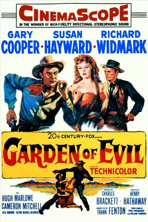

#7316 Der Garten des Bösen
Alternativ: Garden of Evil
 
 IMDB-Wertung: 6.8 / 10
IMDB-Wertung: 6.8 / 10  Metascore: 0
Metascore: 0 
Three Americans are headed by ship around the cape to the California gold fields when they are put ashore for several weeks in a sleepy little Mexican village. While there, they are offered the job of following a lady deep into the indian infested mountains of Mexico to rescue the ladies husband trapped by a cave-in at their gold mine. For the job they are promised two thousand dollars each. While each contemplates their own chances for getting the lady and /or the gold mine, if they can survive to enjoy it.
Jahr: 1954
Dauer: 100 Minuten
FSK: 12
Land: USA Studio: 20th Century FoxTonspuren:
Untertitel:
Auflösung: 720p (1280x504) Größe: 3348 MB
Genre: Action, Drama, Abenteuer, Western, Liebe
Regisseur: Henry Hathaway
Drehbuch: Frank Fenton
Soundtrack:
Darsteller:
 Gary Cooper als Hooker
Gary Cooper als Hooker- Susan Hayward als Leah Fuller
 Richard Widmark als Fiske
Richard Widmark als Fiske Hugh Marlowe als John Fuller
Hugh Marlowe als John Fuller Cameron Mitchell als Luke Daly
Cameron Mitchell als Luke Daly Rita Moreno als Cantina Singer
Rita Moreno als Cantina Singer- Víctor Manuel Mendoza als Vicente Madariaga
- Manuel Dondé als Cantina Waiter , uncredited
- Arturo Soto Rangel als Priest , uncredited
- Salvador Terroba als Victim , uncredited
- Fernando Wagner als Steamboat Captain , uncredited
Datei: X:\HD-Western-1900-1959\Garten des Bösen, Der (1954, FSK12, 1280x504).mkv seit 16.10.2017
Festplatte: HD Eastern+Western
 Es gibt insgesamt 98 Filme in der Gruppe 'HD-Western-1900-1959'
Es gibt insgesamt 98 Filme in der Gruppe 'HD-Western-1900-1959'